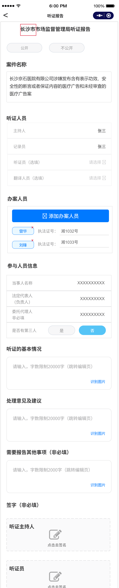

获取听证笔录中的案件名称，如果无听证笔录，按照原逻辑生成
获取听证笔录中的听证人员信息，如果无听证笔录，按照原逻辑生成
获取听证笔录中的参与人员信息，如果无听证笔录，按照原逻辑生成
默认显示：
听证的过程按照：1、办案人员提出当事人违法的事实、行政处罚建议及依据；2、当事人的委托代理人进行陈述和申辩；3、第三人及其委托代理人进行陈述；4、举证和质证；5、辩论；6、办案人员、当事人发表最后意见（详见听证笔录)
基于听证笔录的【违法的事实、证据、行政处罚建议及依据】【当事人（委托代理人）进行陈述和申辩】【质证意见和辩论】使用大模型生成内容。
依据听证笔录及案件情况，系统支持智能制作《听证报告》。